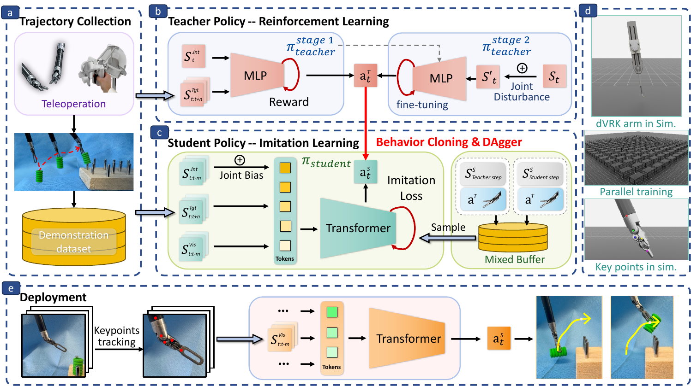

Robot-Assisted Surgery is integral to modern minimally invasive procedures, with automation emerging as the next frontier to enhance precision and reduce surgeon fatigue. This evolution is largely impeded by the inherent kinematic inaccuracies of surgical robots, where unreliable internal sensors lead to significant control errors. While previous methods attempted to mitigate these issues through complex model-based calibration, they often suffer from high cost and limited effectiveness. This work utilises a learning-policy to actively compensate for hardware inaccuracies using closed-loop visual feedback that was trained from a teacher-student learning framework. The policy can fuse unreliable internal readings with precise external visual data, allowing it to correct for kinematic errors in real time without needing a perfect physical model. The learned policy was successfully deployed on the da Vinci Research Kit, where experiments validated the fundamental feasibility of using external vision to overcome internal sensor deficits. This research provides a foundational and reliable control methodology, paving the way for more advanced and robust surgical automation.
Our approach centres on a teacher–student learning framework designed for sim-to-real transfer. An ideal teacher policy is first trained in simulation with reinforcement learning (PPO) using privileged state information, then fine-tuned under joint perturbations to become a robust “recovery expert”. A realistic student policy — a Transformer inspired by ACT — is then distilled from the teacher via interactive imitation learning (DAgger). The student learns to fuse unreliable proprioception with five external 2D keypoints tracked on the instrument, compensating for kinematic errors in closed loop. Domain randomisation over joint biases and camera pose yields a view-invariant policy that transfers directly to the physical da Vinci Research Kit (dVRK), where it outperforms classical IK replay and a learning-based ACT baseline under workspace relocation and viewpoint variation.

@inproceedings{yan2026overcoming,
title = {Overcoming Imperfect Kinematics in Surgical Robotics
Through Sim-to-Real Visuomotor Learning},
author = {Yan, Zhaoxuan and Deng, Kaizhong and Hu, Zhaoyang Jacopo
and Mylonas, George P. and Elson, Daniel S.},
booktitle = {IEEE International Conference on Robotics and Automation (ICRA)},
year = {2026}
}